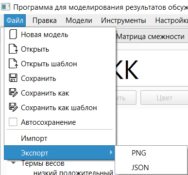
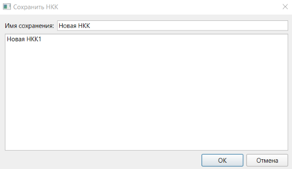
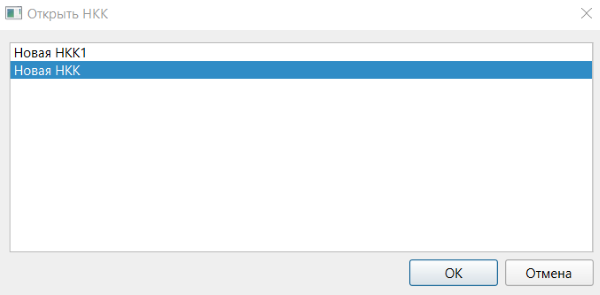
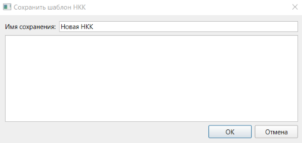
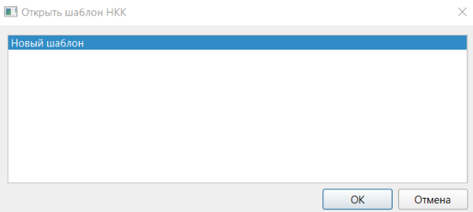
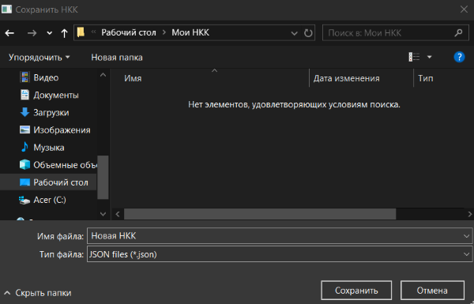
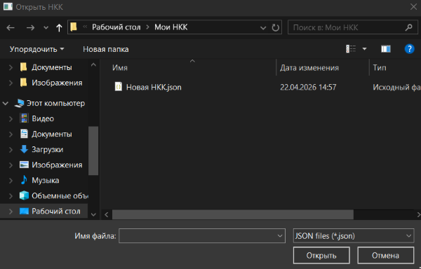

1. Работа с сохранением, импортом и экспортом осуществляется при помощи меню «Файл».

2. Сохранение модели:
2.1. Для сохранения модели, которая до этого не сохранялась необходимо выбрать опцию «Сохранить» или «Сохранить как». В результате будет открыто окно сохранения модели.

2.2. В данном окне перечислены названия всех сохранённых моделей. При двойном нажатии на сохранённую модель её название будет подставлено в поле «Имя сохранения». При нажатии кнопки «Отмена» окно будет закрыто. При нажатии кнопки «ОК» модель будет сохранена под именем, указанным в поле «Имя сохранения». При этом текущее название модели также будет изменено.
2.3. В случае, если текущая модель уже сохранена, для сохранения её текущего состояния под другим именем необходимо выбрать опцию «Сохранить как». Работа с данным окном в этом случае осуществляется аналогично пункту 2.2.
2.4. В случае, если текущая модель уже сохранена, данное её сохранение может быть обновлено при помощи опции «Сохранить».
2.5. В случае, если установлен флаг «Автосохранение», при каждом изменении терма, фактора, связи, названия модели, заметок модели, списка экспериментов или параметров прогнозирования текущее сохранение будет обновлено.
2.6. Для загрузки модели необходимо выбрать опцию «Открыть». В результате будет открыто окно открытия модели. В данном окне предоставляется возможность выбора модели для открытия из сохранённых. При нажатии кнопки «ОК» соответствующая модель будет открыта. При нажатии кнопки «Отмена» окно будет закрыто без изменений.

2.7. Горячей клавишей для опции «Сохранить» является «Ctrl + S». Горячей клавишей для опции «Сохранить как» является «Ctrl + Shift + S». Горячей клавишей для опции «Открыть» является «Ctrl + O».
3. Сохранение шаблонов:
3.1. Шаблон представляет собой модель без заданных значений факторов и связей, а также параметров прогнозирования. Шаблоны предназначены для того, чтобы несколько экспертов могли удобно осуществить оценку данных значений.
3.2. Для сохранения текущей модели как шаблона необходимо выбрать опцию «Сохранить как шаблон» меню «Файл». В результате будет открыто окно сохранения шаблона. Его интерфейс полностью аналогичен окну сохранения модели, за исключением заголовка. Работа с данным окном также осуществляется аналогично, в соответствии с пунктом 2.2, но применительно к шаблонам.

3.3. Для загрузки шаблона как новой модели необходимо выбрать опцию «Открыть шаблон» меню «Файл». В результате будет показано окно открытия шаблона. Его интерфейс полностью аналогичен окну открытия модели, за исключением заголовка. Работа с данным окном также осуществляется аналогично, в соответствии с пунктом 2.6, но применительно к шаблонам.

4. Экспорт и импорт в JSON:
4.1. Для экспорта в JSON необходимо воспользоваться опцией «Экспорт» меню «Файл», а затем выбрать JSON. В результате, средствами операционной системы будет запрошено полное имя файла, в который необходимо выполнить экспорт. По умолчанию в качестве имени файла будет предложено название экспортируемой модели. После нажатия кнопки «Сохранить» будет выполнен экспорт.

4.2. Для импорта из формата JSON необходимо воспользоваться опцией «Импорт» меню «Файл». В результате средствами операционной системы будет запрошено полное имя файла, из которого необходимо выполнить импорт. После нажатия кнопки «Открыть» будет выполнен импорт.

5. При экспорте в формате PNG выполнятся сохранение текущего состояния интерактивной области вкладки построения НКК графическим методом с учётом масштаба и смещения в файл расширения PNG. Экспорт выполняется при помощи опции «PNG» подменю «Экспорт» меню «Файл» аналогично экспорту в формате JSON.